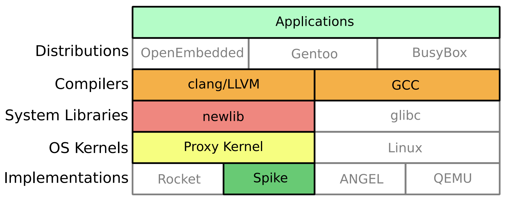
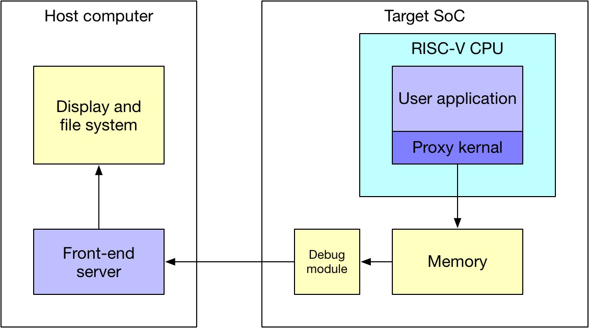

[RISC-V Architecture Training] @DEMO: PK (proxy kernel) and FESVR (front-end server)
PK and FESVRV
- PK (proxy kernel) & FESVR (front-end server)
- For debug and system bring up
- PK is an abstraction of kernel that provides system services through FESVR running on host

- PK is running on target CPU, while FESVR is running on host computer

PK and FESVR / code example
printf in modified version of spike
*# Original spike
> cd ~/riscv-training/lab/22-lab.system-call
> spike ../pk hello.elf
bbl loader
Hello world!
*# Modified spike (print out all system call)
> cd ~/riscv-training/lab/22-lab.system-call
> ~/riscv-git/riscv-tools/riscv-isa-sim/build/spike ../pk hello.elf
bbl loader
fesvr::sys_getmainvars (0x 8000d860 200 0 0 0 0 0)
fesvr::sys_openat (0x ffffffffffffff9c 8000d8b5 a 0 0 0 0)
fesvr::sys_pread (0x 3 8000d600 40 0 0 0 0)
...
fesvr::sys_pread (0x 3 80830000 1000 a000 0 0 0)
fesvr::sys_fstat (0x 1 80024df0 0 0 0 0 0)
fesvr::sys_pread (0x 3 8082c000 1000 6000 0 0 0)
fesvr::sys_write (0x 1 80834230 d 0 0 0 0)
Hello world!
fesvr::sys_exit (0x 0 0 0 0 0 0 0)
PK and FESVR / system call
tohost and fromhost
- Memory location: shared knowledge between PK and FESVR
- Both are 32-bit size, that can be read/write with single access
- Follow producer-consumer model
tohostis written by PK, cleared by FESVRfromhostis written by FESVR, cleared by PK
magicmem
tohostandfromhostare too small to communicate real data structure. They only store the address ofmagicmem- Syscall type, arguments and return values are stored in
magicmem
Syscall entry point in PK
~/riscv-git/riscv-tools/riscv-pk/pk/syscall.c
Syscall handler in FESVR
~/riscv-git/riscv-tools/riscv-isa-sim/fesvr/syscall.cc
PK and FESVR / system call workflow
Please remember, this is for debugging hardware and system bring-up, sometimes co-processor running enviroment. And it’s good for understanding application/kernel interaction.
| Target side (PK on RISC-V) | Host side (FESVR on x86) |
|---|---|
User-level code: ecall and trap into PK |
|
| Write syscall arguments into magicmem | |
| Write address of magicmem into tohost | Looping: read tohost until it’s non-0 |
| Read magicmem | |
| Looping: read tohost until it’s 0 | Write 0 to tohost |
| Deal with syscall. Write return values into magicmem | |
| Looping: read fromhost until it’s non-0 | Write address of magicmem into fromhost |
| Read magicmem | |
| Write 0 to fromhost | Looping: read fromhost until it’s 0 |
PK and FESVR / verification exit
Another very useful scenario
- To pass exit code in verification. It’s embedded inside the
riscv-testsverification suite. RVTEST_PASSandRVTEST_FAILin~/riscv-git/riscv-tools/riscv-tests/env/p/riscv_test.h
#define RVTEST_PASS \
fence; \
li TESTNUM, 1; \
ecall
#define TESTNUM gp
#define RVTEST_FAIL \
fence; \
1: beqz TESTNUM, 1b; \
sll TESTNUM, TESTNUM, 1; \
or TESTNUM, TESTNUM, 1; \
ecall
@LAB: new system call
Add new system call to synchronize system time between target and host
Read CSR of mtime to get system time on RISC-V CPU
Need to use assembly code to get mtime